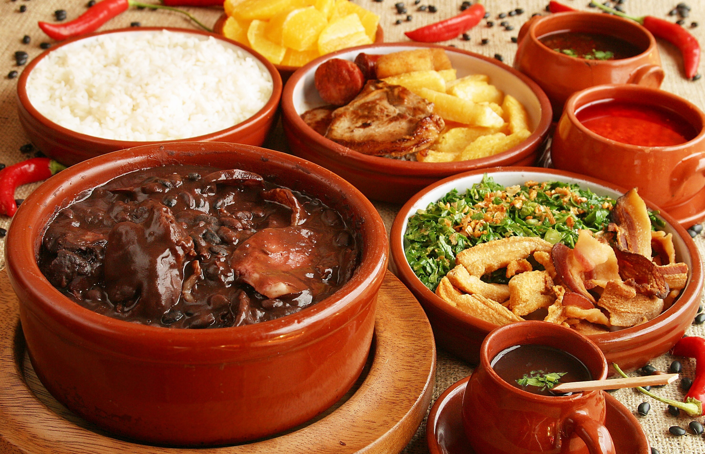

Traditional Brazilian Feijoada
Feijoada is a beloved Brazilian dish that represents a delicious blend of flavors and cultural influences. This hearty black bean stew is a culinary masterpiece, featuring a variety of pork cuts and sausages, all simmered to perfection. Originating from the North-Eastern region of Brazil, Feijoada is a celebration of diverse ingredients and a symbol of the country's rich culinary heritage.
INGREDIENTS
Yield: 4 to 6 servings
- 2 cups black beans, dried
- 1 pound pork shoulder, cut into chunks
- 1/2 pound smoked sausage (linguiça), sliced
- 1/2 pound chorizo sausage, sliced
- 1/2 pound bacon, chopped
- 1 large onion, finely chopped
- 4 cloves garlic, minced
- 2 bay leaves
- 1 tablespoon vegetable oil
- Salt and black pepper to taste
- 4 cups water (for cooking beans)
- Water or broth (as needed for consistency)
- Chopped fresh cilantro or parsley for garnish
- Orange slices (for serving)
PREPARATION
Cook the Beans:
- Rinse the black beans under cold water and soak them overnight. Alternatively, use the quick soak method by bringing the beans to a boil, boiling for 2 minutes, and soaking for 1 hour.
- In a large pot, combine the soaked beans, bay leaves, and 4 cups of water. Bring to a boil, then reduce the heat and simmer until the beans are tender (about 1 to 1.5 hours). Add more water as needed.
Prepare the Meats:
- In a separate pan, heat the vegetable oil over medium heat. Sauté the onions and garlic until softened.
- Add the pork shoulder, smoked sausage, chorizo, and bacon. Cook until the meats are browned.
Combine Meats and Beans:
- Add the cooked meats to the pot of beans. Season with salt and black pepper to taste. Simmer for an additional 30 minutes to allow the flavors to meld.
Adjust Consistency:
- If the feijoada is too thick, you can add water or broth to achieve your desired consistency.
Serve:
- Remove the bay leaves before serving.
- Serve the feijoada over rice, garnished with chopped cilantro or parsley.
- Accompany with sautéed collard greens and farofa on the side.
- Traditionally, feijoada is served with orange slices, which add a refreshing contrast to the rich flavors.